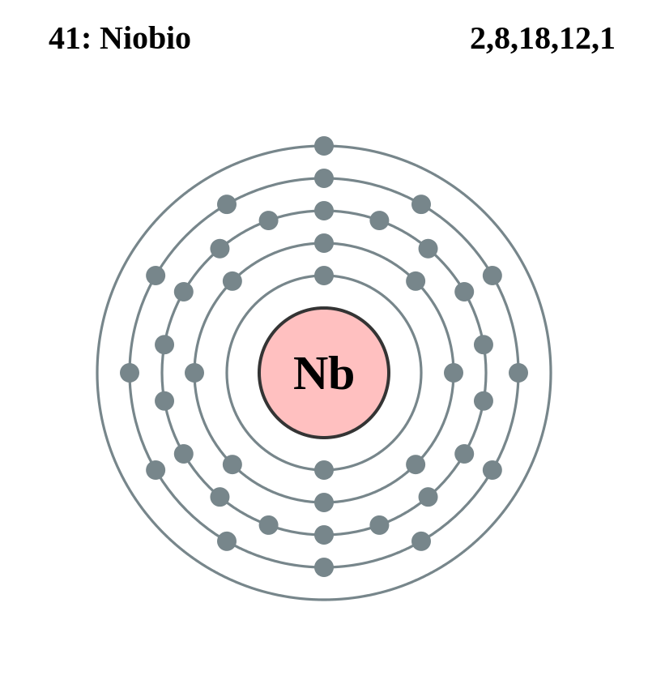

|
|
||
|
Niobio El niobio es un metal blando, dúctil y de color blanco brillante que se torna azulado con la exposición prolongada al aire. Se conocen dieciocho isótopos de niobio. Se encuentra en los minerales niobita, niobita-tantalita, pirocloro y euxenita, y los grandes depósitos están asociados a rocas de carbonato-silicato. El niobio se usa en varillas de soldadura por arco y en sistemas avanzados de estructuras de aeronaves que se utilizan para viajes espaciales. Sus propiedades superconductoras han ayudado a la fabricación de imanes que retienen su superconductividad en presencia de campos magnéticos intensos. |
 |
DATOS Número Atómico: 41 Peso Atómico: 92.91 Electronegatividad: 1,6 Configuración Electrónica: 4d4 5s1 Estados de Oxidación: +5,3 No. de Electrones de Valencia: 5 |